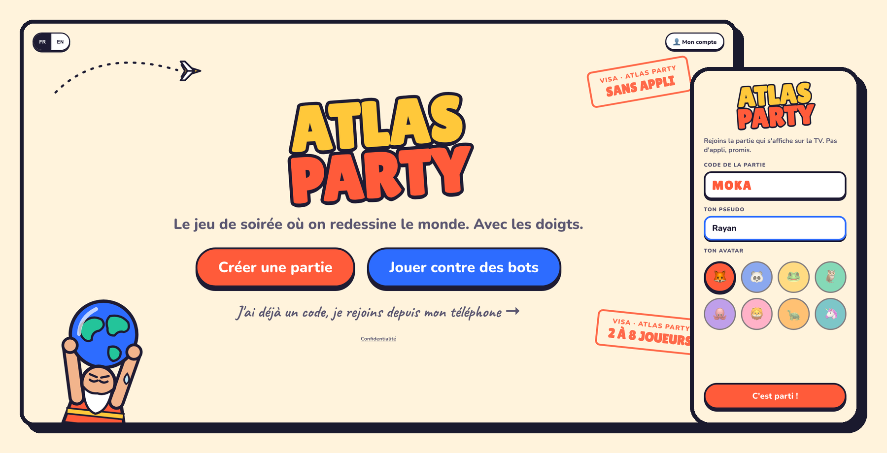

En ligne
Atlas Party
Jeu de soirée sur la géographie : la TV affiche la partie, les téléphones servent de manette. 11 mini-jeux, de 2 à 8 joueurs, sans appli à installer.
Jouer
Élève ingénieur logiciel en 5e année à Polytech Nice Sophia. Mon portfolio fait peau neuve, en attendant voici un projet en ligne.
Jeu de soirée sur la géographie : la TV affiche la partie, les téléphones servent de manette. 11 mini-jeux, de 2 à 8 joueurs, sans appli à installer.
Jouer